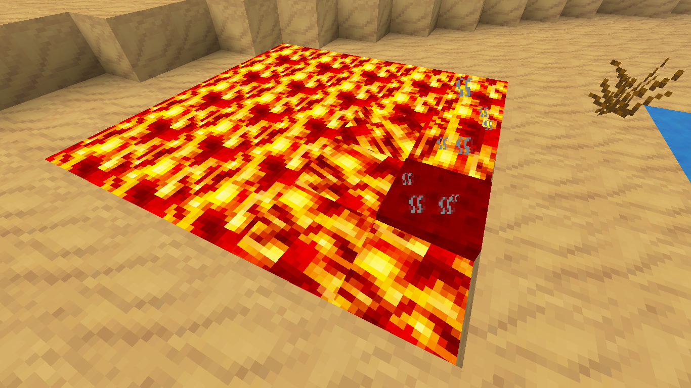
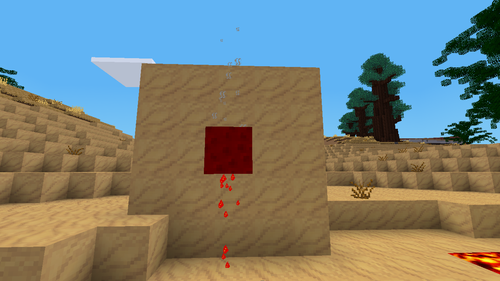

A sponge that soaks up lava
If you enjoyed mysponge then you will enjoy mylavasponge. Just like mysponge except for lava.
Place the sponge in lava to soak it up.
Set it down in the world and it will slowly evoporate and the sponge will dry out.
Put it in the furnace and you will get your sponge back plus lava source.
Be careful because it will set things on fire.
Place the full sponge in the air to see it drip dry. It also has steam coming from it.
While holding an empty bucket punch the sponge to get a bucket of lava.
Enjoy!


- Luanti Forum Link - My Lava Sponge
- Github Link - Veiw Code
- Direct Download - mylavasponge.zip
- ContentDB - My Lava Sponge